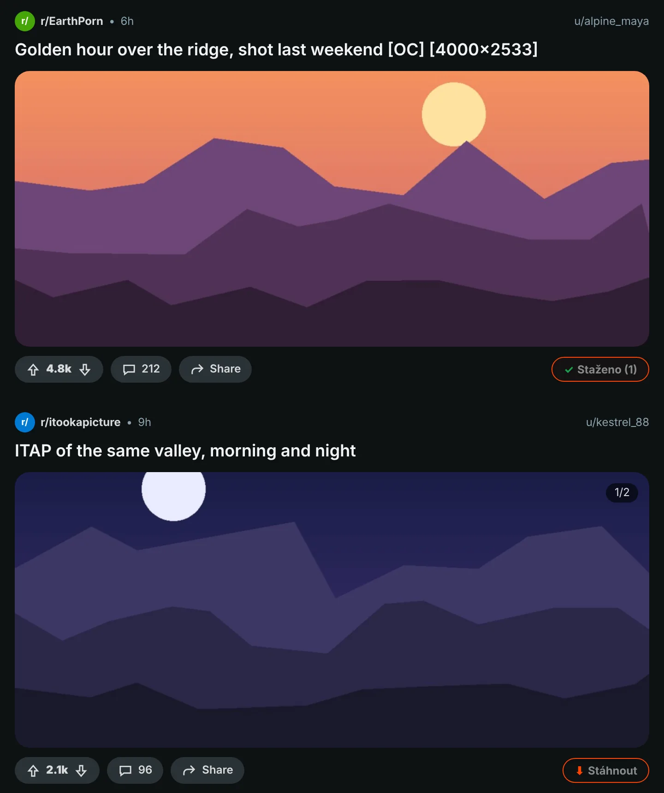
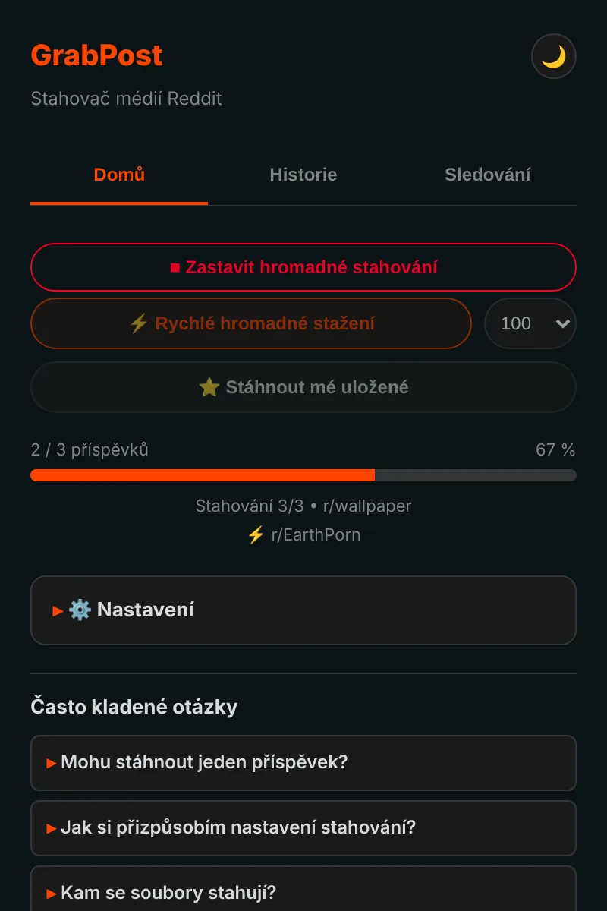
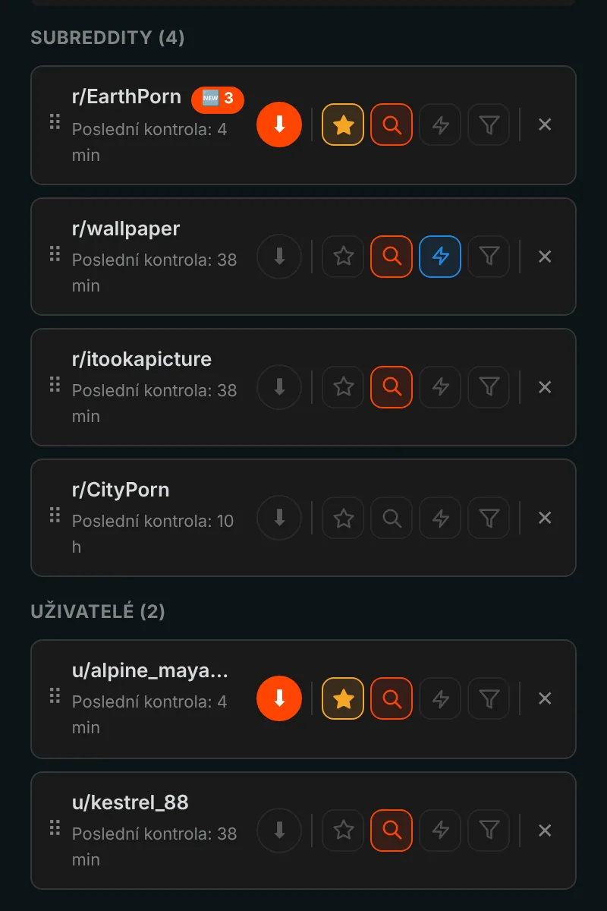
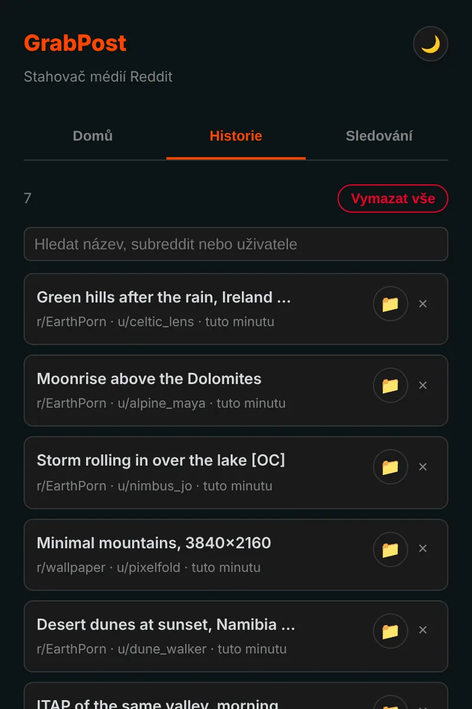

Uložte si z Redditu cokoli jedním kliknutím.
GrabPost přidá ke každému příspěvku na Redditu tlačítko Stáhnout. Videa si ponechají zvuk, galerie dorazí celé a celé subreddity nebo profily se stahují, zatímco děláte něco jiného. Zdarma a bez sledování.
Zatím není v obchodech. Instalace z GitHubu trvá zhruba minutu.

Stiskněte tlačítko u příspěvku.
Tlačítko u každého příspěvku
Oranžové tlačítko je v řádku hlasování a sdílení každého příspěvku: ve feedu, v profilech i ve výsledcích hledání, na novém i starém Redditu. Fungují obrázky, galerie, GIFy, Redgifs i odkazy na Imgur. Alt+Shift+D stáhne příspěvek uprostřed obrazovky.

Celé stránky najednou
Rychlý režim čte subreddit, profil, multireddit nebo hledání přímo z dat Redditu, takže nemusíte posouvat stránku. Přeskočí, co už máte, a zastaví se u příspěvků, které jste stáhli dříve. Uložené příspěvky se stahují stejně.

Sledujte a novinky přijdou samy
Sledujte subreddity a uživatele a dostaňte upozornění, když se objeví nová média, nebo je nechte stáhnout samy. Filtrujte podle typu média, NSFW nebo klíčových slov. Až 10 oblíbených lze kontrolovat třeba každých 5 minut.

Každé stažení se pamatuje
Historie ukazuje, co jste uložili, a má vyhledávání. Příspěvky, které už máte, jsou na Redditu označené. Zálohy vznikají automaticky, takže přeinstalace váš seznam nesmaže.

Na detaily je myšleno
Videa se zvukem
Reddit ukládá zvuk do samostatného souboru. GrabPost ho najde a spojí přímo ve vašem prohlížeči.
Vaše složky, vaše názvy souborů
Šablony jako {subreddit}/{user} pro složky a {date}_{title} pro soubory.
Žádné duplikáty
Pozná stejný obrázek, i když ho někdo znovu nahrál do jiného subredditu.
Funguje vedle IDM
Správci stahování nemohou soubor převzít a zahodit názvy vašich složek.
Trpělivý k Redditu
Když Reddit požádá o pauzu, GrabPost počká přesně tak dlouho, jak je třeba, a pokračuje.
15 jazyků
Rozšíření i tato stránka mluví vaším jazykem.
Co stahujete, je jen vaše věc
- Žádná analytika, žádné sledování, žádný účet
- Komunikuje jen s Redditem a weby, které hostují jeho média
- Historie a nastavení zůstávají ve vašem prohlížeči
- Open source na GitHubu
Nainstalováno za minutu
GrabPost zatím není v Internetovém obchodě Chrome, proto se instaluje ručně. Funguje v Chromu, Edge, Brave, Opeře a dalších prohlížečích založených na Chromiu.
- Stáhněte z GitHubu nejnovější grabpost-v…zip a rozbalte ho do složky, kterou si necháte.
- Otevřete
chrome://extensionsa vpravo nahoře zapněte Režim pro vývojáře. - Klikněte na Načíst rozbalené a vyberte rozbalenou složku grabpost.
- Otevřete Reddit. U příspěvků se objeví oranžové tlačítko a ikona na liště otevře panel GrabPost.
Při aktualizaci nahraďte soubory ve stejné složce a na kartě GrabPost klikněte na tlačítko pro znovunačtení. Nastavení a historie zůstanou.
Firefox: verze pro obchod s doplňky je na cestě. Do té doby lze zip pro Firefox dočasně načíst přes about:debugging.
Otázky
Je GrabPost zdarma?
Ano, všechny funkce jsou zdarma. Pokud vám šetří čas, můžete vývojáři koupit kávu.
Kam se soubory ukládají?
Do složky pro stahování ve vašem prohlížeči, do podsložky, kterou si zvolíte. Výchozí je Reddit Downloads a názvy souborů začínají názvem subredditu.
Musím být přihlášený na Redditu?
Jen kvůli uloženým příspěvkům a komunitám s věkovým omezením. Vše ostatní funguje bez účtu.
Přijdu při přeinstalaci o historii?
Ne. Se zapnutou synchronizací prohlížeče se nastavení a seznam sledovaných vrátí samy. Navíc se automaticky ukládá záložní soubor a GrabPost umí historii obnovit ze seznamu stažených souborů prohlížeče.
Funguje v Edge, Brave nebo Opeře?
Ano. Každý prohlížeč založený na Chromiu, který umí načíst rozbalené rozšíření, funguje se zipem pro Chrome.
Stáhnout GrabPost
Zatím není v obchodech. Instalace z GitHubu trvá zhruba minutu.